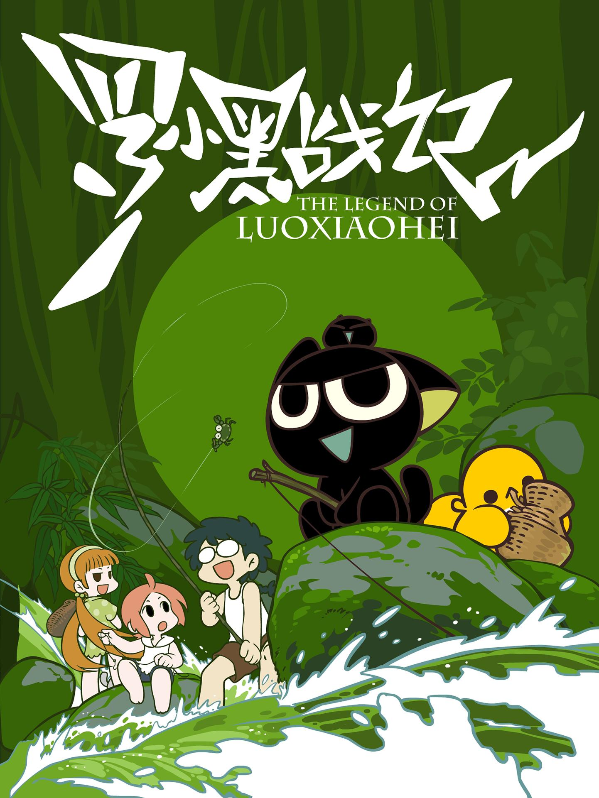

Synopsis
The story begins on a rainy night, when a homeless little black cat is brought home by the young girl Luo Xiaobai. She names the cat Luo Xiaohei. However, Luo Xiaohei is no ordinary cat—he is a supernatural entity that hosts several small creatures called Heichu. Luo Xiaohei's new life is soon threatened by the mysterious Diting, who commands three winged wolves. Before long, Luo Xiaobai takes Xiaohei to the countryside to visit her cousin Agen and Grandpa, and all sorts of strange and mysterious things happen.
Source: asiatvforum.com, edited
